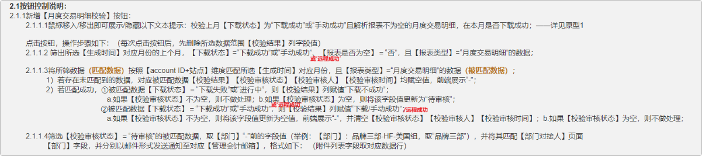

1.amazon：TR、BE等站点文件推送失败，需要改为文件名日期按英文解析；
2.amazon、walmart、wayfair：机器人返回提示语均加上店铺 ；例：【丹斯特】：文件名[US-2024Aug1-2024Aug20CustomUnifiedTransaction.csv]推送成功
3.amazon推送远程报表文件的文件名校验，需要分别支持2种格式：
3.1月度交易明细：站点-期间-MonthlyUnifiedTransaction / 站点-期间-MonthlyTransaction ；
3.2自定义交易明细：站点-日期范围-CustomUnifiedTransaction / 站点-日期范围-CustomTransaction ；
3.3月度汇总：站点-期间-MonthlyUnifiedSummary / 站点-期间-MonthlySummary ；
4.amazon、walmart、wayfair：4.1文件同步至平台财务报表后，列表【下载状态】更新为‘远程成功’；对应搜索框也需新增该下拉选项；
除walmart平台外，amazon、wayfair自动审核定时任务范围新增远程成功账单，执行频率改为半小时一次；
4.2注意相关按钮校验逻辑需调整：—开发可检查是否有其他逻辑需调整；
①amazon、walmart、wayfair【审核】：审核范围新增【下载状态】=‘远程成功’的数据；
②amazon：【月度交易明细校验】：需在有‘下载成功’或‘手动成功’的校验逻辑中加上‘远程成功’；—下图红字部分
原需求链接：https://ta4dzf.axshare.com/#id=ztzv5z&p=%E4%B8%8B%E8%BD%BD%E8%AF%A6%E6%83%85_4&g=1

5、amazon、walmart、wayfair：支持同一店铺 通过压缩包（zip/rar）批量上传同步账单；
5.1amazon、walmart：不同类型账单均可放在同一压缩包中批量上传，根据文件名区分类别；
5.2wayfair：压缩包嵌套压缩包，校验第二层压缩包名以判断账单类型；
附表：操作手册 https://doc.weixin.qq.com/sheet/e3_AdAAAQZZAPEz4iofSvvQ4eZeNkCXj?scode=AIAAhQcPAAk9diKwRkAdAAAQZZAPE&tab=v9pi94